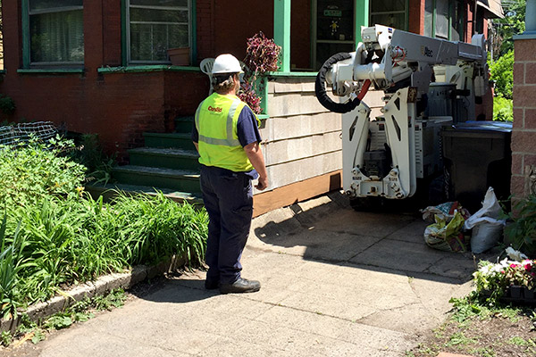
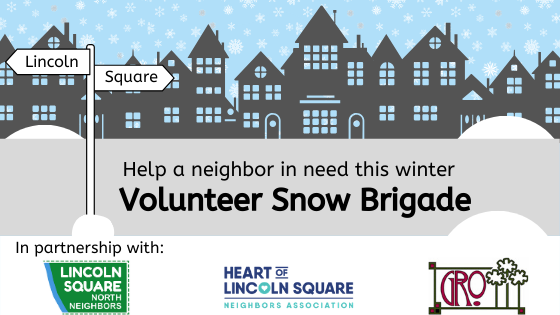

GRO held its annual election for officers at the October GRO monthly meeting, October 1, 7:30 p.m. at the Lincoln Square Presbyterian Church meeting space, 4639 N. Rockwell. Congratulations to the following new officers:
President: Connie Barnes
1st Vice Presiedent: Dana Dougherty
2nd Vice President: Tom Kosinski
Treasurer: Lucinda Dieker
Secratary: Bea Tersch

November's monthly GRO meeting featured Jeff Ocrutt, formerly the personal policy advisor for Illinois Commerce Commissioner Miguel del Valle. Jeff addressed the group on ComEd's history and explained how the state of Illinois sets the utility's customer billing rates and what the latest fights down in Springfield may mean for customers in the future.

Help a neighbor, make a new friend, and get in some cardio. Sign up here to join the all-new Lincoln Square Volunteer Snow Brigade! To volunteer click HERE Know someone who needs help? Please direct them HERE